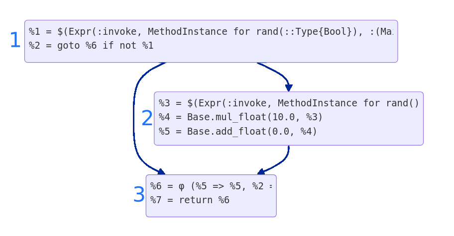

# Adventures in IR: Plundering Core.Compiler Dr Frames White (she/her) JuliaHub --- ## 🗺️ This conference is much better located note: Only 24 hours in transit, not 48 hours. Only 1/3rd the way round the would, not half. Much less remote than Boston. There were even multiple routes that didn't transfer in countries where I am illegal --- ## 💬 What is this talk? This is about writing custom optimization passes that work using the tools that are built into the compiler itself. In contrast to say IRTools.jl which reimplements analysis and modification utilities itself Used in DAECompiler.jl, (parts of) Diffractor.jl, Tapir.jl --- ## 💡 Why would I want to do this? - Run different optimization pipeline - e.g. Allow union splitting with more than 4 elements in the union - Generate multiple functions from 1 definition - DAECompile generates about a dozen different functions like Jacobians and callbacks from a single function definition. - This kinda thing generally requires custom intrinsics. --- ## ⚠ A warning: this is unstable internals This is so far away from a public API. We are in the deep intercontinental ocean. The light of god can not reach you here. Various bits of it change fairly often. This talk is with reference to **v1.12.0-DEV.469**. note: I suggest looking in Diffractor's source for the various version branches. See Valentin Churavy's talk for some parts of stablizing some of this. But it will likely remain not fully public. In particular, the trick of giving typed IR to an OpaqueCloure is likely to change. It's not what they were really made for, it just happens to be convienent. But the general content and conception of this talk should remain useful. --- ## 🔩 A lot of the utilities are not in the Base namespace You need to manual method merge from `Core.Compiler` into `Base` things like: `iterate`, `length`, `getindex`, `setindex!`, `lastindex` and maybe tweak definitions For example: ```julia const CC = Core.Compiler Base.lastindex(x::CC.InstructionStream) = CC.length(x) ``` Check Diffractor's `compiler_utils.jl` for details. --- ## 🪠 The compiler pipeline You are likely familiar with the compilation pipeline of: 1. Source code 2. Parsing -> AST 3. Lowering -> Untyped IR 4. Type Inference -> Typed IR 5. Code Generation -> LLVM IR 6. Assembling -> Machine Code note: talk about what tools run where --- ## ⌨️ Let's zoom-in on the Typed IR Richer than AST or lowered IR, as those are just lexical transforms of text. We have semantic information like types. If you have used `@code_typed` you get back typed IR, as a `CodeInfo` object. For this talk we actually want a `IRCode` object, which you can get from `Base.code_ircode`. note: This is the representation that is used with in the optimizer. It is a true SSA, and it is also enriched with the CFG. This is what is actually created and manipulated during this step, and what almost all Julia's own optimization passes are running on. --- ## 👀 Look at this IRCode ```julia-repl julia> function qux() x=0.0 if (@noinline rand(Bool)) x += 10(@noinline rand()) end return x end; julia> Base.code_ircode(qux) |> first 3 1 ─ %1 = invoke Main.rand(Main.Bool::Type{Bool})::Bool │ └── goto #3 if not %1 │ 4 2 ─ %3 = invoke Main.rand()::Float64 │ │ %4 = Base.mul_float(10.0, %3)::Float64 │╻ * └── %5 = Base.add_float(0.0, %4)::Float64 │╻ + 6 3 ┄ %6 = φ (#2 => %5, #1 => 0.0)::Float64 │ └── return %6 │ => Float64 ``` --- # Parts --- ## 👩🏫 Instructions We can think of IR code as a list of instructions. For the `ii`th instruction we have: ```julia ir[SSAValue(ii)][:stmt] # The expression ir[SSAValue(ii)][:type] # the lattices (including type lattice) ir[SSAValue(ii)][:flag] # flags # + some other stuff ``` Notice we use `[:stmt]` not `.stmt`, the fields are not nice. note: the `:stmt` can hold a `Expr`, a `SSAValue`, an `Argument` or a literal, or a few other things like gotos, `ReturnNode`s. --- ## 💬 Expr Broadly speaking inside SSA IR an Expr is not so different from in the AST. But it is restricted. Most significantly it can't be nested, as it is **Single Statement Assigment**. It can only contain `SSAValue`s, `Argument`s and literals. **No:** ```llvm %1 = foo(2*2) ``` **Yes:** ```llvm %1 = 2*2 %2 = foo(%1) ``` --- ## 1️⃣ SSAValues An `SSAValue` is the value of a single statement.. Written `%1`, `%2` etc ```julia-repl julia> foo() = 2 * (@noinline rand()) foo (generic function with 1 method) julia> Base.code_ircode(foo, Tuple{}) 1 1 ─ %1 = invoke Main.rand()::Float64 │ │ %2 = Base.mul_float(2.0, %1)::Float64 │╻ * └── return %2 │ => Float64 ``` --- ## 💥 Arguments An `Argument`, written `_1`, `_2`,`_3` etc represent the arguments to the functions. Functionally they are much like `SSAValue`s but without instructions associated with them `_1` is the function object itself, so its first argument is `_2` ```julia-repl julia> Base.code_ircode(+, (Int, Int),) |> only 87 1 ─ %1 = Base.add_int(_2, _3)::Int64 │ └── return %1 │ => Int64 ``` --- ## 📖 Literals Obviously, we have literals that are things like `1.0`, `:c` etc. But more generally we can insert *any* value into the IR. Including complicated structures. ```julia-repl julia> @eval foo() = $([1, 2]); julia> Base.code_ircode(foo) |> first 1 ─ return [1, 2] │ => Vector{Int64} ``` This can be weird if it is mutated. This is very useful when constructing manually --- #### 🚳 Without literals: ```julia-repl julia> bar() = [1, 2]; julia> Base.code_ircode(bar) |> first 1 1 ─ %1 = $(Expr(:foreigncall, :(:jl_alloc_genericmemory), Ref{Memory{Int64}}, svec(Any, Int64), 0, :(:ccall), Memory{Int64}, 2, 2))::Memory{Int64} │ %2 = Core.memoryref(%1)::MemoryRef{Int64} ││╻ Array └── %3 = %new(Vector{Int64}, %2, (2,))::Vector{Int64} │││ 2 ┄ %4 = φ (#1 => 1, #6 => %15)::Int64 │╻ vect │ %5 = φ (#1 => 1, #6 => %16)::Int64 ││ │ %6 = Base.getfield((1, 2), %4, false)::Int64 ││╻ __safe_getindex │ %7 = Base.getfield(%3, :ref)::MemoryRef{Int64} │││╻ getproperty │ %8 = Base.memoryref(%7, %4, false)::MemoryRef{Int64} │││ │ Base.memoryrefset!(%8, %6, :not_atomic, false)::Int64 │││ │ %10 = (%5 === 2)::Bool ││╻╷ iterate └── goto #4 if not %10 │││ 3 ─ goto #5 │││ 4 ─ %13 = Base.add_int(%5, 1)::Int64 │││╻ + └── goto #5 ││││ 5 ┄ %15 = φ (#4 => %13)::Int64 ││ │ %16 = φ (#4 => %13)::Int64 ││ │ %17 = φ (#3 => true, #4 => false)::Bool ││ │ %18 = Base.not_int(%17)::Bool ││ └── goto #7 if not %18 ││ 6 ─ goto #2 ││ 7 ─ goto #8 ││ 8 ─ return %3 ││ => Vector{Int64} ``` note: this is just a lot of code, you don;t want that to have to run at runtime and you definitely don't want to generate that by hand. But even when you have to there is a cool trick ``` --- ## 🧙🏻♀️ Invokes and Calls You are familar with `Expr(:call, f, args...)` from the AST. But in the `IRCode` we also have `Expr(:invoke, method_instance, f, args...)` - Call is used for dynamic dispatches - Invoke is used for static dispatches Running type inference will replace type-known calls with invokes. So generally insert calls, and let type-inference work it out. --- ## 🍫 Basic blocks Lowering turns ASTs into flat structures. It remove `if-else`, `for`, `while` replacing them with `goto`s and `goto if not`s. However, structure still remains: you run a block of code before hiting a point that you can jump to. These are basic blocks ```julia-repl julia> function qux() x=0.0 if (@noinline rand(Bool)) x += 10(@noinline rand()) end return x end; julia> Base.code_ircode(qux) |> first 3 1 ─ %1 = invoke Main.rand(Main.Bool::Type{Bool})::Bool │ └── goto #3 if not %1 │ 4 2 ─ %3 = invoke Main.rand()::Float64 │ │ %4 = Base.mul_float(10.0, %3)::Float64 │╻ * └── %5 = Base.add_float(0.0, %4)::Float64 │╻ + 6 3 ┄ %6 = φ (#2 => %5, #1 => 0.0)::Float64 │ └── return %6 │ => Float64 ``` --- ## 📊 Control Flow Graph (CFG) We can extract the possible paths through the basic blocks as a graph. <div> <div style="display: inline-block; width: 50%;"> ```julia-repl julia> ir.cfg CFG with 3 blocks: bb 1 (stmts 1:2) → bb 3, 2 bb 2 (stmts 3:5) → bb 3 bb 3 (stmts 6:7) julia> ir.cfg.blocks[2].stmts 3-element Core.Compiler.StmtRange: 3 4 5 julia> ir.cfg.blocks[2].preds 1-element Vector{Int64}: 1 julia> ir.cfg.blocks[2].succs 1-element Vector{Int64}: 3 ``` </div> <div style="display: inline-block; width: 49%">  </div> </div> --- ## π Phi nodes Phi nodes are kinda like `ifelse` statements, but they know which basic block was just left. For example ```julia %33 = φ (#2 => %8, #4 => %17, #6 => %26, #8 => %31)::Union{Float32, Int32} ``` says to set `%33` to: - `%8` if we came from `#2` - `%17` if we came from `#4` - `%26` if we came from `#6` - `%31` if we came from `#8` They are weird little time-reversed friends. Almost opposite of a `goto` -- `if_came_from`. --- # How Tos --- ## 🏝️ How to replace an instruction ```julia inst = ir[SSAValue(1)] inst[:stmt] = ... # new statement here ir[idx][:info] = CC.NoCallInfo() inst[:type] = # if the know type put it here. OR: put `Any` and: inst[:flag] |= Core.Compiler.IR_FLAG_REFINED # mark for type inference ``` Then make sure to (re-)run type inference after, if you didn't put in a type. (Or it will work but be really slow) --- ## 🗑️ How do I delete an instruction? Functionally there is no reason to actually delete instructions -- that would require renumbering the SSAValues, which is expensive and if you are doing it best done in batch (more on that later). Instead set it to `nothing` which will be trivially optimized out as an unusued literal ```julia inst = ir[SSAValue(ii)] inst[:stmt] = nothing inst[:type] = Nothing ``` --- ## 📩 How do I insert an instruction ```julia insert_node!( ir::Core.Compiler.IRCode, pos::Core.SSAValue, newinst::Core.Compiler.NewInstruction, attach_after::Bool) NewInstruction( stmt, type, info::Core.Compiler.CallInfo == NoCallInfo() line=nothing # copy line above flag=nothing # automatically determined from context ) ``` Often if it is nontrivial to express as a single statement, you can instead define a little local function in your transform code then insert reference to that function (as a literal) --- ## 🗜️ additions are only pending til you `compact!` <pre><font color="#4E9A06"><b>julia> </b></font>foo() = 10; <font color="#4E9A06"><b>julia> </b></font>ir, _ = Base.code_ircode(foo) |> first <font color="#88807C"> </font>1 ─ return 10 <font color="#88807C">│</font> <font color="#88807C"> </font> => Int64 <font color="#88807C"> </font> <font color="#4E9A06"><b>julia> </b></font>CC.insert_node!(ir, CC.SSAValue(1), CC.NewInstruction(Expr(:call, println, "hi"), Any)) :(%2) <font color="#4E9A06"><b>julia> </b></font>ir <font color="#88807C"> </font>1 ─ <font color="#4E9A06"> (println)("hi")</font><font color="#88807C">::Any</font> <font color="#88807C">│</font> <font color="#88807C"> </font>└── return 10 <font color="#88807C"> </font> <font color="#88807C"> </font> <font color="#88807C"> </font> <font color="#4E9A06"><b>julia> </b></font>ir = CC.compact!(ir) <font color="#88807C"> </font>1 ─ (println)("hi")<font color="#88807C">::Any</font> <font color="#88807C">│</font> <font color="#88807C"> </font>└── return 10 <font color="#88807C">│</font> </pre> --- ## 🗜️ IncrementalCompact `CC.IncrementalCompact` is more powerful tool for writing IR passes. It can consume IR with pending additions and as you iterate it it compacts. However, its also a bit more fiddly and we do not have time too cover it. --- ## 🧠 What is a custom intrinsic? For our purpose a custom intrinsic is something that 1. has special handling by our custom pass 2. doesn't end up in the final code after our passes are done A major use of custom intrinsics is to push things into a custom lattice during abstract interpretation. --- ## 🧠 How do I define a custom intrinsic? We can simply use a function that does nothing. We just need to ensure that no earlier optimize pass removes it, e.g. via inlining and seeing it is effect free. ```julia @noinline function @assume_effects :nothrow :effect_free compile_datetime() Base.compilerbarrier(:const, nothing) end ``` note: the noinline makes sure you can still find the function object, because its content isn't just inlined assume_effects should be set to mimic the effects of what you will replace it with which often is removal and doing something else so `:nothrow :effect_free` are correct. compilerbarrier(:const, data) stops this being constant folded away. It has a good doc string. Sometimes you might need `Base.donotdelete` as well. Which prevents it being dead code eliminated from being in unreachable branches etc. But only if you want your intrinsic to not follow control flow rules. --- ## 🧠 How do I use a custom intrinsic? ```julia for ii in 1:length(ir.stmts) inst = ir[SSAValue(ii)] stmt = inst[:stmt] if (Meta.isexpr(stmt, :invoke, 2) && CC.singleton_type(CC.argextype(stmt.args[2])) == compile_datetime) inst[:stmt] = Dates.now() inst[:type] = DateTime end end ``` note: You write a pass that checks for it and does something. Here we are just replacing it with a value computed at compile time. But we could do much more. --- ## 🏃♀️ How do I run the full compiler pipeline manually? 1. Get + transform or create IR 2. Run inference (optional) 3. run optimization (optional) 4. Give to `OpaqueClosure` to compile into executable code note: You an just pass the IR stright to an OpaqueClosure (at any stage) but it will be heckin' slow. Especially without inference. --- ## 🧮 How do I run inference? ```julia "run type inference and constant propagation on the ir" function infer_ir!( ir::CC.IRCode, interp::CC.AbstractInterpreter, mi::CC.MethodInstance ) method_info = CC.MethodInfo(#=propagate_inbounds=#true, nothing) min_world = world = CC.get_world_counter(interp) max_world = Base.get_world_counter() spec_types = ir.argtypes irsv = CC.IRInterpretationState( interp, method_info, ir, mi, spec_types, world, min_world, max_world ) rt = CC._ir_abstract_constant_propagation(interp, irsv) return ir end ``` --- ## 🧏🏻♀️ How do I get an interpreter? If doing custom abstract interpretation (see Keno's talk) you already have one. If not: ```julia CC.NativeInterpreter(; inf_params::InferenceParameters, opt_params::OptimizationParameters ) ``` <div class="r-stack"> <div class="fragment current-visible"> `InferenceParameters(; kwargs...)` - `max_methods = 3` - `max_union_splitting = 4` - `max_apply_union_enum = 8` - `max_tuple_splat = 32` - `tuple_complexity_limit_depth = 3` - others, see docstring </div> <div class="fragment"> `OptimizationParameters(; kwargs...)` - `inlining::Bool = inlining_enabled()` - `inline_cost_threshold = 100` - `max_tuple_splat = 32` - `compilesig_invokes = true` - `assume_fatal_throw = false` - others, see docstring </div> </div> notes: both OptimizationParameters and InferenceParameters have really good docstrings. Unlike most things. --- ## 🥪 How do I get a fresh method instance for inference? ```julia function get_toplevel_mi_from_ir(ir::CC.IRCode, _module::Module) mi = ccall(:jl_new_method_instance_uninit,Ref{CC.MethodInstance},()) mi.specTypes = Tuple{map(CC.widenconst, ir.argtypes)...} mi.def = _module return mi end ``` notes: explain `CC.widenconst` drops extra lattices. As name suggest the most common extra lattice is the constant lattice. Which will show up in IR.argtypes for the function object. --- ## 🥅 Bringing it all together: compiling IR manually ```julia function compile(ir, intepr::CC.AbstractInterpreter, _module=@__MODULE__) mi = get_toplevel_mi_from_ir(ir, _module); ir = infer_ir!(ir, interp, mi) # Optional: run some optimization passes (these have docstrings) inline_state = Core.Compiler.InliningState(interp) ir = Core.Compiler.ssa_inlining_pass!(ir, inline_state, #=propagate_inbounds=#true) ir = Core.Compiler.compact!(ir) ir = Core.Compiler.sroa_pass!(ir, inline_state) ir = Core.Compiler.adce_pass!(ir, inline_state) ir = Core.Compiler.compact!(ir) # optional but without checking you get segfaults easily. Core.Compiler.verify_ir(ir) # Bundle this up into something that can be executed return Core.OpaqueClosure(ir; do_compile=true) end ``` note: SROA is Scalar Replacement of Aggregates Basically turning some structs back into just their fields. ADCE stands for Aggressive Dead Code Elimination ## 🕵️♀️ Debugging code segfaulting (1) Eyeball it <pre><font color="#4E9A06"><b>julia> </b></font>foo() = 10 foo (generic function with 3 methods) <font color="#4E9A06"><b>julia> </b></font>ir, _ = Base.code_ircode(foo) |> first <font color="#88807C"> </font>1 ─ return 10 <font color="#88807C">│</font> <font color="#88807C"> </font> => Int64 <font color="#88807C"> </font> <font color="#4E9A06"><b>julia> </b></font>CC.insert_node!(ir, CC.SSAValue(1), CC.NewInstruction(CC.SSAValue(3), Any)) :(%2) <font color="#4E9A06"><b>julia> </b></font>ir <font color="#88807C"> </font>1 ─ <font color="#4E9A06"> </font><font color="#CC0000">%3</font><font color="#88807C">::Any</font> <font color="#88807C">│</font> <font color="#88807C"> </font>└── return 10 <font color="#88807C"> </font> <font color="#88807C"> </font> <font color="#88807C"> </font> </pre> --- ## 🕵️♀️ Debugging code segfaulting Ask `verify_ir(ir)` which asserts all the subtle assumptions the compiler makes. A good idea to call this in all your compilation pipelines. Check in particular you are not modifying the `ir` directly, while also working with it via `IncrementalCompact`. Run julia in `gdb`. note: I would really like someone to run a talk on running julia in GDB --- # Conclusion --- ## 💡 What can you now do: - understand the optimization part of compilation pipeline really well - write typed IR transforms using the compilers own utilities - **Fun Challenge**: You can write a function decorator macro that does a IR Transform of your choice on the function it decorates --- # Appendix --- ## Pi nodes These are like type-assertions. ```julia=-repl julia> int32_or_float32() = rand((rand() > 0.5 ? Int32 : Float32)); julia> function bar() a = @noinline int32_or_float32() return a + a end; julia> Base.code_ircode(bar) |> only 2 1 ─ %1 = invoke Main.int32_or_float32()::Union{Float32, Int32} 3 │ %2 = (isa)(%1, Float32)::Bool │ │ %3 = (isa)(%1, Float32)::Bool │ │ %4 = (Core.Intrinsics.and_int)(%2, %3)::Bool │ └── goto #3 if not %4 │ 2 ─ %6 = π (%1, Float32) │ │ %7 = π (%1, Float32) │ │ %8 = Base.add_float(%6, %7)::Float32 │╻ + └── goto #9 │ 3 ─ ... 8 ─ %29 = π (%1, Int32) │ │ %30 = π (%1, Int32) │ │ %31 = Base.add_int(%29, %30)::Int32 │╻ + └── goto #9 │ 9 ┄ %33 = φ (#2 => %8, #4 => %17, #6 => %26, #8 => %31)::Union{Float32, Int32} └── return %33 │ => Union{Float32, Int32} ``` note: They are facts that are certain to be true, so the compiler can use them. They are often inserted by type assertions or branching on types, etc. For example they are inserted during union-splitting